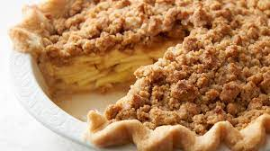

Dutch Apple Pie

DESCRIPTION
Now that you have hopefully read about the cheesy potatoes, we're onto
the dessert.
The Dutch Apple Pie
There's not much of a great desciption for this, other than its a pie.
It's a good pie.
I hope you enjoy.
INGREDIENTS
- 1 pie shell
- 5 cups apples - cored and sliced
- 2 tablespoons all-purpose flour
- 2/3 cups sugar
- 1/2 teaspoon ground cinnamon
- 1/4 teaspoon nutmeg
- 1/4 teaspoon allspice
- 2 tablespoons butter
- 3/4 cup all-purpose flour
- 1/2 teaspoon ground cinnamon
- 1/2 cup packed brown sugar
- 3/4 cup rolled oats
- 1/2 cup butter
STEPS
- Preheat oven to 425 degrees. Fit pie crust into pan and place in freezer.
- Place apples in large bowl, in separate bowl combine 2 tbps flour,
white sugar, 1/2 tsp cinnamon, nutmeg, and allspice. Mix well, then add apples.
Toss until evenly coated.
- Remove shell from freezer, place apple mixture in pie shell with 2 tbsp butter.
- Bake in preheated oven for 10 minutes.
- For crumble topping: combine 3/4 cup flour, 1/2 tsp cinnamon, brown sugar,
and oats. Mix thoroughly, then cut in 1/2 cup butter until mixture is crumbly.
Sprinkle on top of pie.
- Reduce heat to 375 and bake an additional 30-35 minutes, until topping is brown
and apples tender. Cover loosely with aluminum foil to prevent excessive browning.
- You did it!